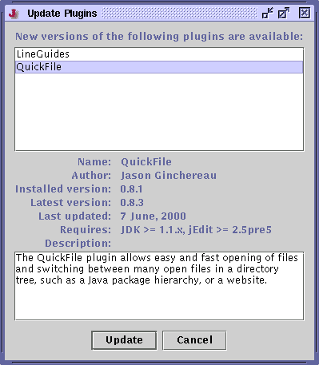
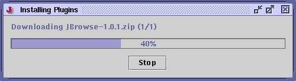

To check if updated versions of installed plugins are available, click the Update Plugins button in the plugin manager. The plugin manager will then connect to jEdit plugin central and compare your installed plugins against the latest available ones. Any outdated ones will be displayed in a list. To install the new plugin revisions, select any or all of them and click Update.
Figure 9-2. The Update Plugins dialog box

A progress window will be shown while the plugins are being downloaded.
Figure 9-3. The plugin download dialog box
